Group Project Fig 2 - Plot for missing values
Preparation for Machine Learning module
GitHub-hosted version: butterworthc.github.io/ml-course/e-Portfolio.html
Notebooks and data files: https://github.com/ButterworthC/ml-course
We were introduced to Schwab & Zahid's paper on the impact of machine learning on the workplace and future levels of employment. The lecturecast described the effect of technology in bringing about Industry 4.0, described as cyber-physical systems (Schwab & Zahid, 2020). Supervised and unsupervised machine learning were mentioned, as were the 4 V's of big data: Volume, Velocity, Variety and Veracity (Grand Canyon University, 2019), veracity being the one which matters most from a legal or ethical standpoint).
This unit involved preparation for the collaborative discussion on Industry 4.0, the upcoming team data analysis project, and the e-Portfolio. We were directed to a notebook which demonstrates EDA. I was unable to find this in Google Colab so I found a similar notebook and dataset in Kaggle (Moore, 2021).
I looked for relationships between the prices of cars and their number of cylinders, horsepower, fuel efficiency etc., and produced scatter plots...
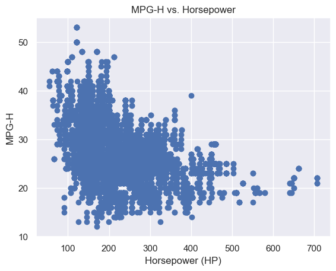
and a correlation matrix.
The notebook I created is Unit 2 Kaggle EDA.ipynb and the dataset is kaggle_car_data_for_eda.csv
We were directed to four notebooks (University of Essex, 2024a) to see how the calculated correlation and regression depend on the supplied data.
Ex 1: Covariance and Pearson's correlation
The first notebook displayed a scatter plot between two sets of random numbers with weightings applied. I quickly discovered that the number (1000) in the randn() function needed to be the same for both sets (of course), but that varying the factors (20, 10) and the offsets (100, 50) changed not only the shape of the plot but also the means and standard deviations for either dataset and the covariance and Pearson's correlation, a.k.a. the correlation coefficient (Nield, 2022: 171-179).
Ex 2: Linear Regression
Passing arrays of x and y values to the SciPy lingress() method and receiving them as a tuple to variables for slope and intercept (discarding the ones for r, p and std_err), the notebook then uses the SciPy pearsonr() method to calculate the correlation, before defining its own simple function, based on y = mx + b, for predicting y based on a given x (Harrison, 2019: 191-222).
Ex 3: Multiple Linear Regression
This uses the LinearRegression method (Nield, 2022: 191) of the sklearn library instead of SciPy. The regression has two independent variables, weight in kg and engine volume in cm3, and one dependent variable, CO2, in units of grams (per what? mile, km, hour? It doesn't say!). The regression object returns an array of two coefficients for the two regressions:
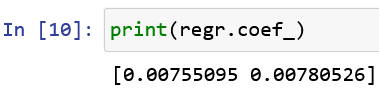
Its predict() method performs the same task as the custom function in the previous exercise.Ex 4: Polynomial Regression
"A quadratic regression between the response Y and the predictor X would take the form: Y = b0 + b1X + b2X2 + e" (Bruce et al., 2020: 188-189). The numpy library has a function called polyfit(), which takes arrays containing the x and y coordinates as its first two parameters, and a function called poly1d(), which takes the output from polyfit(), for creating a model based on the data. The value of R2 given in this example is over 0.94, indicating a strong positive relation.
I quoted a German paper credited with introducing the phrase "Industry 4.0" in 2013. This was described as a sort of matrix consisting of robotic production line machines ("Cyber-Physical Systems") connected to a matrix of controllers, sensors, data in the cloud, various AI systems and even people, who become part of the internet of things (Kagermann et al., 2013). Citing another paper from the 2010's (Krenkel et al., 2016), I painted a picture of a much more efficient manufacturing base. My first respondent (Mutebe, 2024a) pointed out that my description of Industry 4.0 was similar to that of a recent paper on the role of ChatGPT in Industry 4.0 (Javaid et al., 2023).
I mentioned my prior involvement in the 3D metal printing industry, and my second respondent (Solar Sumana, 2024) commented on how this gives "the average consumer" access to custom products.
My "incident" was Microsoft Tay, the chatbot that became racist (Kraft, 2016) and I was given another similar example (Solar Sumana, 2024) about a chatbot called Tessa, which was supposed to be giving dietary advice to people but ended up giving harmful suggestions (Aratani, 2023).
I tried to give a positive impression of the innovations, with the caveat that things can go wrong if data preparation is not carried out carefully enough.
(References moved below.)
The Fuel Consumption notebook (University of Essex, 2024b), was very similar to the one I found in Kaggle in Unit 2. The first part included a correlation matrix, which included a redundant column "MODELYEAR" containing lots of NaN values. I thought this could have been deleted to reduce the dimensions of the matrix and avoid confusion. The seaborn pairplot() method was then used to plot regression matrices, from which the strong relation between fuel consumption and CO2 emissions is apparent, along with the relation between city and highway MPGs. Later, the dataframe is split into training and testing datasets (80/20). Then, the notebook imports the linear_model module from the scikit-learn library (Scavetta & Angelov, 2021) and instantiates the LinearRegression class as regr, using its fit() method with one-dimensional arrays of the x and y training data (engine size, CO2 emissions). Coefficient and intercept are then given by regr.coeff_ and regr.intercept_. Using matplotlib.pyplot, aliased as plt, the regression line is superimposed on the scatter plot. The Mean absolute error, Residual sum of squares (MSE), and R2-score (R2) are calculated. This notebook finishes with a non-linear regression involving a custom sigmoid function.
I created a notebook to perform the correlation and regression tasks using the population and GDP datasets. It needs tweaking because the mean populations do not look right:
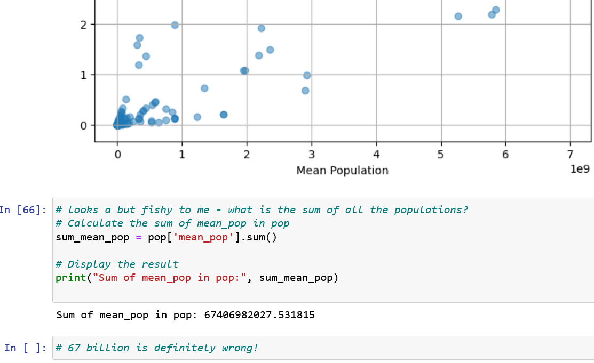
However, I managed to clean up a lot of the data, including deduplicating Aruba and sorting the population dataset so I could get both datasets synchronised. Eventually I found the world_population dataset on Kaggle, saved it as "Unit04 world_population.csv" and opened it in Excel to have a quick look. There are fewer rows, and column names need altering but I might be able to do a join on it or a correlation without a join. I might come back to this one but for now I've got to move on.
In the lecturecast were some new things like SMC and Jaccard coefficient, as well as cohesion and separation, which will be useful concepts.
The K-Clustering animations (Shabalin, N.D., Harris, 2014) were helpful in improving my understanding of this iterative process.
I created a notebook called Unit05 Jaccard coefficients.iypnb but did not find the hints useful, nor indeed ChatGPT, so I found an article online (Geeks for Geeks, 2023a) which explained that the Jaccard coefficient (a.k.a. Jaccard similarity or Jaccard index) is the size of the intersection of two sets divided by the size of their union. The Python code for this follows on with ease because of the intersection() and union() set methods, and of course the len() function.
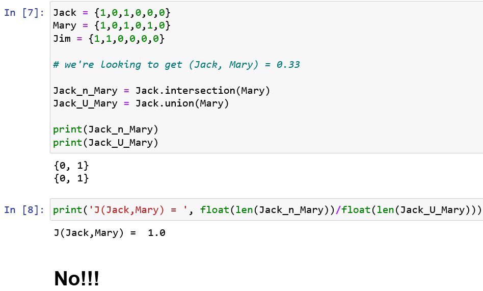
[It doesn't work yet!!!]
Chapter 6 was not relevant to this unit, so I read Chapter 15 instead and found out a lot about k-means clustering (Kubat, 2021: 297-310) although the required textbook does not mention Jaccard in the index.
The k-means demo notebook kept giving a warning about a Windows memory leak, which could be fixed "by setting the environment variable OMP_NUM_THREADS=4." (Python). I did this but the warning persisted. However, the scatter plot of income vs age displayed, although the one of education, age and income did not. I saw how the code looped through k values from 1 to 9, plotting the squared errors and producing an elbow at about k=3. The plot for the silhouette coefficient looped from k values of 2 to 9, because there need to be at least 2 clusters as it compares the distance between clusters with the size of clusters and gives a value from -1 to 1. "1 indicates tight clusters, and 0 means overlapping clusters" (Harrison, 2019: 277).
I created Unit06 K-Means clustering on iris data.ipynb and adapted some code for plotting clusters from a Kaggle notebook (Khotijah, 2000). I produced three distinct clusters and plotted them in both 2D and 3D:
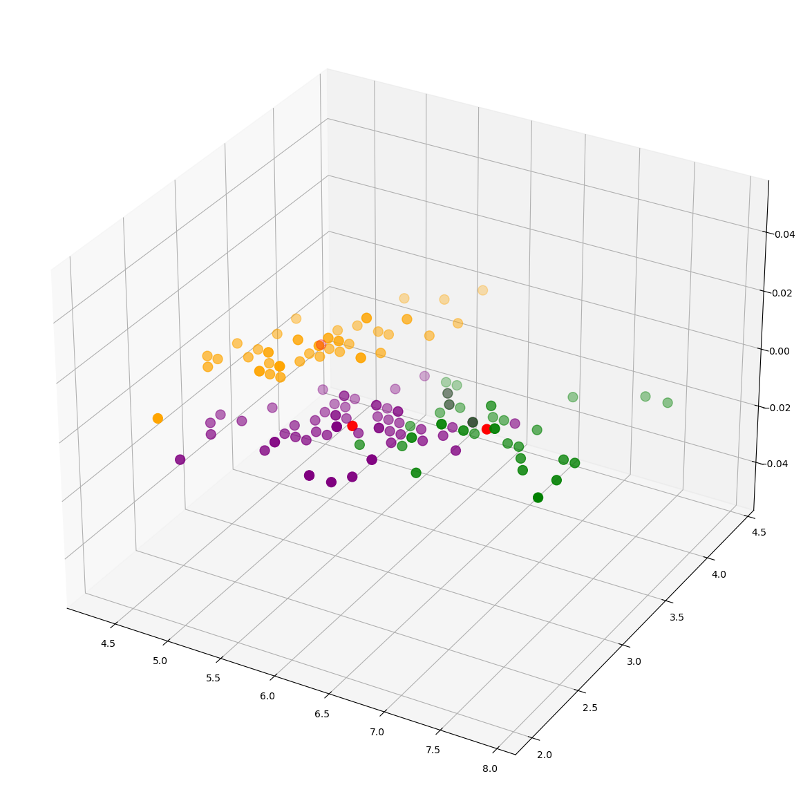
I found an article on the wine dataset (Geeks for Geeks, 2024) and created Unit06 K-Means clustering on wine data.ipynb. I plotted the first 12 possible combinations of alcohol with the other 12 attributes. The first to show 3 distinct clusters was the 12th of these: alcohol vs proline:
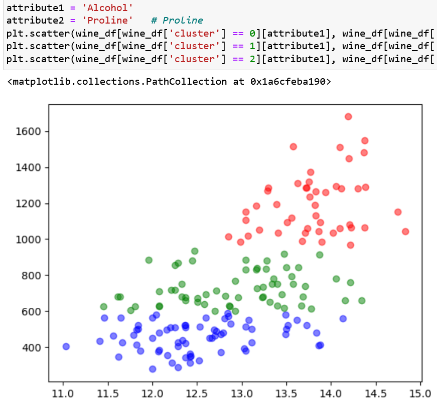
I had a lot of help from ChatGPT but when it came to plotting the centroids all I got was a grid with the wrong scales. [I'll come back and do WeatherAUS, if I have time.]
There were four of us in the group for this project. Most of the Python work (github.com/Ngugi-Joy-Grace/airbnb-business-analysis/blob/main/analysis.ipynb) was done by one person. She did a very good job of it, and I learned a lot about data pre-processing:
Group Project Fig 2 - Plot for missing values
The report (Butterworth et al., 2024) concentrated on the geographical information contained in the AirBnB dataset, and it was presented as simply as possible, for example:

Group Project Fig 5 - Distribution of Listings across New York
Our conclusion was:
"The analysis of Airbnb listings in New York City reveals diverse offerings and host engagement. Brooklyn and Queens cater to tourists through affordable and short-term accommodations, while Manhattan offers a spectrum from budget-friendly to premium, with a tendency toward professional hosting. Growth opportunities abound in the Bronx and Staten Island, where the market is less saturated. Year-round availability in these areas also indicates a possibility for a stable income for hosts and consistent choices for guests. This approach, alongside a diversified property portfolio, could enhance bookings especially in the Bronx and Staten Island's emerging markets."
This time, Chapter 6 was relevant, being titled "Artificial Neural Networks" (Kubat, 2021: 117-141). I was already familiar with the sigmoid function and its shape but it would have been nice to see the shape of its first derivative, and perhaps its derivation. I found both of these online; the shape is a bell, which could have been deduced from the accelerating/inflection/decelerating shape of sigma (Geeks for Geeks, 2023a).
The two key sentences in this chapter are "while there is no communication between neurons of the same layer, adjacent layers are fully interconnected. Importantly, each neuron-to-neuron link is associated with a weight" (Kubat, 2021: 119). These concepts are illustrated with diagrams and there is an example with input and output values. The explanation of MSE (Mean Squared Error) as a measure of "wrongness" is useful, and is made clear by reference to the example (Kubat, 2021: 122).
Backpropagation is used to adjust the weightings of the connections between the layers of neurons until the MSE is minimised. One problem with this chapter is that it does not explain what the superscripts mean until page 133, whereas I think page 117 would have been a better place. I could follow the explanations of ANN in this chapter until it introduced radial basis function networks on page 137. I will have to come back to this after the module is finished.
The lecturecast described the same concepts, with a better introduction to the biological basis of neural networks. We were directed to three notebooks (University of Essex, 2024c) containing examples of perceptrons.
In Ex 1 I saw that images can be put into notebook cells. Also new to me was the fact that the type of an array declared as np.array is numpy.ndarray. The simple perceptron example was easy to follow.
Ex 2 was also easy to follow, and the key to it is:
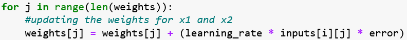
Ex 3 illustrated the modification of the weight arrays. Many cells were used to demonstrate the principles, but in the last few cells the process was started again from scratch more succinctly.
The lecturecast includes a link to a simple demonstration of a 2-layer MLP: hmkcode.com/netflow/, unfortunately without attribution or explanation. The main theme was backpropagation but much of the material was dealt with in Unit 7. This unit emphasised gradient descent and the use of derivatives to find minima by adjusting the step size when the (negative) slope approaches zero.
I read section 4.5 of the textbook, about polynomial classifiers (Kubat, 2021: 79-82), which seemed a bit off-topic for this unit, and also the article about benefits and risks of AI writers (Hutson, 2021).
Unit 8 e-Portfolio Activity: Gradient Cost Function
The prescribed paper for this activity introduces methods of finding minima in the cost functions of weights (Mayo, 2017). After explaining that we want to go down the slope to find the minimum cost, it links to a thread on Stack Exchange in which an original ("initial" in Essex-speak) poster asks how to select a learning rate for SGD (stochastic gradient descent) and the responses introduce various training algorithms (Stack Exchange, 2014). These include Adagrad, which requires a learning rate to be set (Duchi et al, 2011), Adadelta, which doesn't (Zeiler, 2012), and one which is growing in use, Adam (Kingma & Ba, 2015).
The notebook (University of Essex, 2024d) starts with an illustration of a learning rate that is too high and jumps over the minimum, and an illustration of a learning rate that shrinks as it approaches a minimum (based on the reducing gradient) so that it lands in the minimum. A function, gradient_descent(), is defined, taking an array, x, of inputs and an array, y, of outputs, as parameters, outputting a slope, an intercept and a cost per iteration:
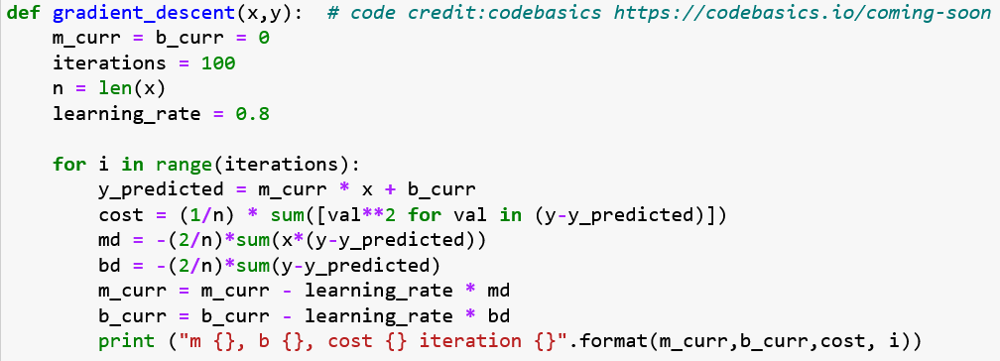
There is an example run of 100 iterations, with a value for the learning rate of 0.8, and this produces values for gradient (m), intercept (b) and cost. I varied the learning rate with the iterations fixed at 100, and then varied the number of iterations with the learning rate fixed at 0.8, and was going to show the results in a table, but on most runs the results converged at infinity, so I think there might have been a problem.
When I accessed the paper about 10 Business Applications of Neural Networks from the Required Reading page, I found it was not written by a P. Mach but by a Michal Pruciak (Pruciak, 2021). Uses of ANNs mentioned include anomaly detection (fraud), financial forecasting, marketing, route planning, and self-driving cars.
Having read the article about benefits and risks of AI writers, I made an Initial Post, in which I wrote about the creative output of GPT in work and leisure, citing the prescribed article (Hutson, 2021) and also mentioning my own efforts to make it produce computer code. My concern was that AI systems feed each other, in a huge echo chamber, and I cited a paper describing them as "stochastic parrots" (Bender et al., 2021). My first respondent highlighted the necessity of feeding good data into AI systems (Mutebe, 2024b), and my second respondent thought reinforcement learning could be applied to ingested data to improve its quality (Chan, 2022, Matsuo et al, 2022).
Neural networks that enable computer vision.
The lecturecast includes a link to a Kaggle tutorial on Convolution and ReLU, which may be useful in the project. There was an explanation of the filtering, detection and condensation steps of feature learning.
Chapter 15 is not relevant but Chapter 16 gives a good exposition of Convolutional Neural Networks, teaching me a lot about kernels (filters), the "degree of fit" formula, strides & padding, varieties of pooling such as max-pooling and ave-pooling, the use of ReLU and LReLU functions in CNN, the loss function formula, dimensionality, tensors, and transfer learning (Kubat, 2021: 327-350).
Unit 9 e-Portfolio Activity - CNN Model Activity
The BBC's Technology of Business editor wrote an article on "the ethical dilemmas posed by FR" (Wall, 2019), in which he balances the advantages, such as saving many lives by recognising a terrorist, against the disadvantages, such as the possibility of killing an innocent victim of mistaken identity. He states that skin colour may affect FR's accuracy, and that opposition to FR has led to it being banned in San Francisco. He mentions a University of Essex study (five years ago) into the use of FR by the police in central and east London, where it was found that FR usually led to mistaken identity (Guardian, 2019). After briefly discussing FR's emergence in military situations, Wall concludes: "FR tech remains under suspicion and under scrutiny."
My own view is that while there are bound to be cases of mistaken identity, these will quickly be cleared up without danger of innocents being punished, although in a more trigger-happy country there are fewer safeguards, no matter what their Bill of Rights says.
The notebook, Ex1 Convolutional Neural Networks (CNN) - Object Recognition (University of Essex, 2024e), would not run until I ran the following at the start:
!pip install tensorflowand thereafter it was fine all the way to the penultimate cell, where it refused to run:
model.predict_classes(my_image.reshape(1,32,32,3))and I had to consult with ChatGPT4 to find out that the predict_classes method had been removed from TensorFlow 2.x.
# Ensure the image is reshaped to the correct dimensions: (1, 32, 32, 3) reshaped_image = my_image.reshape(1, 32, 32, 3) # Use the `predict` method to get the probabilities predictions = model.predict(reshaped_image) # Get the index of the class with the highest probability predicted_class = np.argmax(predictions, axis=1)The notebook did not need to load image files from disk as they were included as a set in the cifar10 dataset of the datasets module of the keras library. This comprises ten categories of 6,000 32x32 pixel colour images, these being:
['airplane', 'automobile','bird','cat', 'deer', 'dog', 'frog', 'horse', 'ship', 'truck']
As directed I changed the value in
plt.imshow(x_test[16])and ended up looking at cats, horses, trucks etc. The line
LABEL_NAMES[predicted_class[0]]produced the correct classification each time:
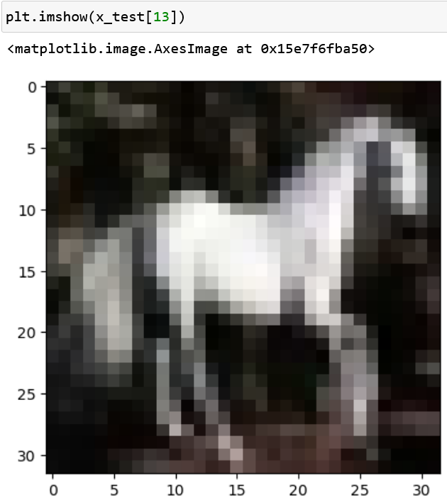
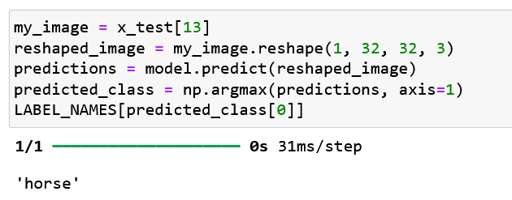
I think I'll be using a lot of the Python in this notebook for the presentation project, so I won't describe it twice. I searched Kaggle for notebooks with the same name as the one in Ex 1 so I could make the proper attribution to any lifted code but all I found were lots of other notebooks demonstrating the same code with the same dataset, so I'll be crediting "many Kaggle members."
CNN Explainer is an interactive web page that lets you inspect neural network components to see how propagation and backpropagation work (Wang et al., 2021). A YouTube video demonstrates how to use it (Wang, 2020).
I uploaded this image to it:

©CarsGuide
It was classified as 64% lifeboat and 30% sports car.
However, a blue E-Type:

©AutoZine
was classified correctly at 29.5% sports car, 27.6% lifeboat, 19% ladybug, 13% koala and 6% school bus. The blue Jaguar was still less of a sports car than the red one that was a lifeboat.
On their YouTube page there were links to a visual video on activation functions, Taylor series and Fourier transforms (Emergent Garden, 2023) and a playlist about neural networks (3Blue1Brown, 2017)
The reading was about classification in different fields, including medical diagnosis, character recognition, oil-spill recognition, sleep stages, brain-computer interfaces, and text (Kubat, 2021: 161-178). Chapter 8 seemed appropriate to the unit.
I ran the Model Performance Measurement notebook (University of Essex, 2024f) with different parameters to see how they affected the AUC (Area Under Curve) and R2 error. It looked as if this notebook started with the results of machine learning, already scored in terms of true and false positives and negatives and therefore not requiring any data. These are fed into the confusion_matrix function of the metrics submodule in sklearn, flattened into a single array and then the variables for tn, fp, fn, and tp extracted in a tuple assignment.
AUC is calculated by functions auc and roc_auc_score, depending on whether the inputs are arrays of coordinates or labels and predicted scores.
I noted AUC for the cell that scored ROC AUC for breast cancer, and varied the solver, with these results:
| solver | ROC AUC score | |
|---|---|---|
| lbfgs | 0.9941 | failed to converge |
| liblinear | 0.9946 | |
| newton-cg | 0.9947 | |
| sag | 0.9506 | max_iter reached, so coef_ did not converge |
| saga | 0.9384 | max_iter reached, so coef_ did not converge |
R2 is calculated in the last two cells of this notepad, and does not require the cells above to be run first. All that is needed is:
from sklearn.metrics import r2_score y_true = [3, -0.5, 2, 7] y_pred = [2.5, 0.0, 2, 8] r2_score(y_true, y_pred)and this results in a value for r2 of 0.9486, so I varied the values as follows:
| y_true | y_pred | MAE | r2 | |
|---|---|---|---|---|
| [3, -0.5, 2, 7] | [2.5, 0.0, 2, 8] | 0.5000 | 0.9486 | original values |
| [3, -0.5, 2, 7] | [3, -0.5, 2, 7] | 0.0000 | 1.0000 | y_true = y_pred |
| [6, -1.0, 4, 14] | [3, -0.5, 2, 7] | 3.1250 | 0.4668 | y_true = 2 * y_pred |
| [3, -0.5, 2, 7] | [6, -1, 4, 14] | 3.125 | -1.1328 | y_pred = 2 * y_true |
| [3, -0.5, 2, 7] | [0, 0, 0, 0] | 3.1250 | -1.1328 | |
| [3, -0.5, 2, 7] | [3, 0, 2, 7] | 0.1250 | 0.9914 | small difference: r2 close to 1 |
Assignment - Neural Network Models for Object Recognition.ipynb
A prognostic machine learning model: prediction
In space, unexpected events can have catastrophic consequences, for example, the failure of communication systems can bring a mission to an abrupt end. If such a fault could be anticipated in time, perhaps a workaround could be found to save the mission. This scenario happens in 2001: A Space Odyssey, when the self-aware onboard computer predicts a failure in a communications circuit board, prompting a crew member to do a spacewalk to replace it (Shorrock, 2013). Unfortunately, this is just a ruse to get the crew member outside, and the computer's intentions are neither legal nor ethical.
Down on the ground, predicting failure is becoming a valuable tool in factories, where entire production lines can grind to a halt due to the failure of a single mechanism, and I had experience of this when I worked for the Ford Motor Company. The process of prediction is described in a paper on industrial prognosis, which it defines as "the capability to estimate and anticipate events of interest regarding industrial assets and production processes" (Diez-Olivan, 2019). It involves the continuous collection and ingestion of vast quantities of data produced by sensors, which builds up into histories of the components being monitored. This training data is used to develop ML models and more of it is used for testing. The paper names "Cross Industry Standard Process for Data Mining (CRISP)" as the industry standard for this. It consists of a pipeline of processes with arrows showing progress and feedbacks, culminating in "Deployment."
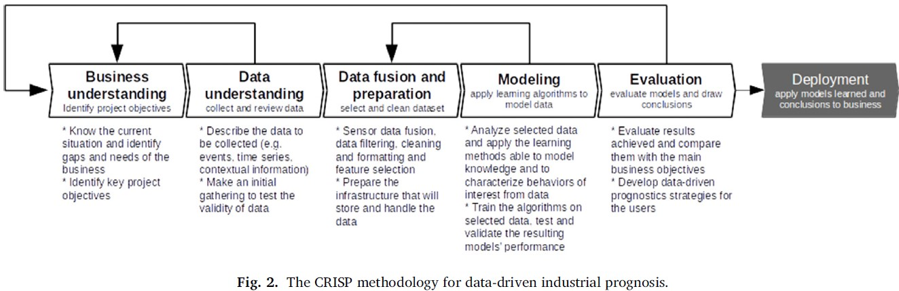
(Diez-Olivan, 2019)
Parameters to be monitored include a component's work schedule, stresses, and historical likelihood of failure.
I think the ethical considerations here should include the maintenance of quality and safety in products to be used by people and it is therefore essential to deal with faulty production processes.
3Blue1Brown (2017) Neural networks. Available from www.youtube.com/watch?v=aircAruvnKk&list=PLZHQObOWTQDNU6R1_67000Dx_ZCJB-3pi [Accessed 17 May 2024].
Aratani, L. (2023) US eating disorder helpline takes down AI chatbot over harmful advice. The Guardian. Available from: www.theguardian.com/technology/2023/may/31/eating-disorder-hotline-union-ai-chatbot-harm [Accessed: 06 April 2024].
Bender, E.M. et al. (2021) On the Dangers of Stochastic Parrots: Can Language Models Be Too Big? FAccT '21: Proceedings of the 2021 ACM Conference on Fairness, Accountability, and Transparency. 610-623. DOI: doi.org/10.1145/3442188.3445922
Bruce P, Bruce, A. & Gedeck, P. (2019) Practical Statistics for Data Scientists. 2nd ed. Sebastopol, CA: O'Reilly Media Inc.
Butterworth, C.J. (2024) Initial Post on Industry 4.0. Available from: www.my-course.co.uk/mod/forum/discuss.php?d=217349 [Accessed 14 May 2024].
Butterworth, C.J., Ngugi, J., Narang, A., Bolton, W. (2024) ML Spring '24 Group 1 Project Report. Available from: ML Spring '24 Group 1 Project Report.pdf [Accessed 16 May 2024].
Chan, J. (2022) The Echo Chamber of Algorithm Bias. International Journal of Business, Humanities and Technology 12(1). DOI: doi.org/10.30845/ijbht.v12n1p1
Diez-Olivan, A. (2019) Data fusion and machine learning for industrial prognosis: Trends and perspectives towards Industry 4.0. Information Fusion 50(2019): 92–111.
Duchi, J., et al. (2011) Adaptive Subgradient Methods for Online Learning and Stochastic Optimisation. Journal of Machine Learning Research 12(2011): 2121-2159.
Emergent Garden (2023) Watching Neural Networks Learn. Available from: www.youtube.com/watch?v=TkwXa7Cvfr8 [Accessed 18 May 2024].
Geeks for Geeks (2023a) How to Calculate Jaccard Similarity in Python. Available from: www.geeksforgeeks.org/how-to-calculate-jaccard-similarity-in-python/ [Accessed 10 May 2024].
Geeks for Geeks (2023b) Derivative of the Sigmoid Function. Available from: www.geeksforgeeks.org/derivative-of-the-sigmoid-function [Accessed 12 May 2024].
Geeks for Geeks (2024) Wine Dataset in Sklearn. Available from www.geeksforgeeks.org/wine-dataset/ [Accessed 11 May 2024].
Grand Canyon University (2019) What are the 4 V’s of Big Data? Available from: www.gcu.edu/blog/engineering-technology/what-are-4-vs-big-data [Accessed 1 June 2024].
Guardian (2019) Police face calls to end use of facial recognition software. Available from: www.theguardian.com/technology/2019/jul/03/police-face-calls-to-end-use-of-facial-recognition-software [Accessed 15 May 2024].
Harris, N. (2014) Visualising K-Means Clustering. Available from: www.naftaliharris.com/blog/visualizing-k-means-clustering/ [Accessed 10 May 2024].
Harrison, M. (2019) Machine Learning Pocket Reference. 1st ed. Sebastopol, CA: O'Reilly Media Inc.
Hutson, M. (2021) Robo-writers: the rise and risks of language-generating AI. Nature (591): 22-25. DOI: doi.org/10.1038/d41586-021-00530-0
Javaid, M., Haleem, A. & Singh, R.P. (2023) A study on ChatGPT for Industry 4.0: Background, Potentials, Challenges, and Eventualities. Journal of Economy and Technology 1(4).
Kagermann, H. et al. (2013) Industrie 4.0: Mit dem Internet der Dinge auf dem Weg zur 4. industriellen Revolution [Translated: "Industry 4.0: The Road to the Fourth Industrial Revolution with the Internet of Things"]. acatech DEUTSCHE AKADEMIE DER TECHNIKWISSENSCHAFTEN.
Khotijah, S. (2000) K-Means Clustering of Iris Dataset. Available from: www.kaggle.com/code/khotijahs1/k-means-clustering-of-iris-dataset [Accessed 11 May 2024].
Kingma, D.P. & Ba, J.L. (2015) Adam: A Method for Stochastic Optimisation. Available from: arxiv.org/pdf/1412.6980 [Accessed 15 May 2024].
Kraft, A (2016) Microsoft shuts down AI chatbot after it turned into a Nazi. Available from: www.cbsnews.com/news/microsoft-shuts-down-ai-chatbot-after-it-turned-into-racist-nazi/ [Accessed 17 March 2024].
Krenkel, W. et al. (2016) Additive Manufacturing as Enabler for Industry 4.0. Procedia CIRP 54(2016): 13-17.
Kubat, M. (2021) An Introduction to Machine Learning. 3rd ed. Cham: Springer.
Matsuo, Y. et al. (2022) Deep learning, reinforcement learning, and world models. Neural Networks DOI: doi.org/10.1016/j.neunet.2022.03.037
Mayo, M. (2017) Neural Network Foundations, Explained: Updating Weights with Gradient Descent & Backpropagation. Available from: www.kdnuggets.com/2017/10/neural-network-foundations-explained-gradient-descent.html [Accessed 14 May 2024].
Moore, I. (2021) Intro to Exploratory Data Analysis (EDA) in Python. Available from: www.kaggle.com/code/imoore/intro-to-exploratory-data-analysis-eda-in-python/notebook [Accessed 26 April 2024].
Mutebe, A. (2024a) Peer Response to Collaborative Discussion 1: The 4th Industrial Revolution. Available from: www.my-course.co.uk/mod/forum/discuss.php?d=217349#p385918 [Accessed 5 April 2024].
Mutebe, A. (2024b) Peer Response to Collaborative Discussion 2: Legal and Ethical views on ANN applications. Available from: https://www.my-course.co.uk/mod/forum/discuss.php?d=230794&parent=417703 [Accessed 31 May 2024].
Nield, T. (2022) Essential Math for Data Science. 1st ed. Sebastopol, CA: O'Reilly Media Inc.
OpenAI (2024) GPT-4 technical report. Available from: chat.openai.com [Accessed: 30 May 2024].
Pruciak, M. (2021) 10 Business Applications of Neural Network (With Examples!). Available from: www.ideamotive.co/blog/business-applications-of-neural-network [Accessed 15 May 2024].
Rotatori, D., Lee, E.J. and Sleeva, S., 2021. The evolution of the workforce during the fourth industrial revolution. Human Resource Development International 24(1): pp.92-103.
Scavetta, R.J. & Angelov, B (2021) Python and R for the Modern Data Scientist. 1st ed. Sebastopol, CA: O'Reilly Media Inc.
Schwab, K. & Zahid, S. (2020) The Future of Jobs. Available from: www3.weforum.org/docs/WEF_Future_of_Jobs_2020.pdf [Accessed 12 March 2024].
Shabalin, A.A. (N.D.) K-means clustering. Available from: shabal.in/visuals/kmeans/2.html [Accessed 10 May 2024].
Shorrock, S. (2013) The HAL 9000 Explanation: "It Can Only Be Attributable to Human Error". Available from: humanisticsystems.com/2013/10/26/the-hal9000-explanation-it-can-only-be-attributable-to-human-error/ [Accessed 30 May 2024].
Solar Sumana, S. (2024) Peer Response to Collaborative Discussion 1: The 4th Industrial Revolution. Available from: www.my-course.co.uk/mod/forum/discuss.php?d=217349#p391196 [Accessed 5 April 2024].
Stack Exchange (2014) Choosing a learning rate. Available from datascience.stackexchange.com/questions/410/choosing-a-learning-rate [Accessed 15 May 2024].
University of Essex. (2024a) Unit 3 of Machine Learning Module. Available from: www.my-course.co.uk/mod/page/view.php?id=958879 [Accessed 8 May 2024].
University of Essex. (2024b) Unit 4 of Machine Learning Module. Available from: www.my-course.co.uk/mod/book/view.php?id=958831&chapterid=12818 [Accessed 9 May 2024].
University of Essex. (2024c) Unit 7 of Machine Learning Module. Available from: www.my-course.co.uk/mod/page/view.php?id=958908 [Accessed 13 May 2024].
University of Essex. (2024d) Unit 8 of Machine Learning Module. Available from: www.my-course.co.uk/mod/page/view.php?id=958917 [Accessed 15 May 2024].
University of Essex. (2024e) Unit 9 of Machine Learning Module. Available from: www.my-course.co.uk/mod/page/view.php?id=958925 [Accessed 16 May 2024].
University of Essex. (2024f) Unit 11 of Machine Learning Module. Available from: www.my-course.co.uk/mod/page/view.php?id=958936 [Accessed 19 May 2024].
Wall, M. (2019) Biased and wrong? Facial recognition tech in the dock. Available from: www.bbc.co.uk/news/business-48842750 [Accessed 15 May 2024].
Wang, Z.J. (2020) Demo Video "CNN Explainer: Learning Convolutional Neural Networks with Interactive Visualisation". Available from www.youtube.com/watch?v=HnWIHWFbuUQ [Accessed 17 May 2024].
Wang, Z.J. et al. (2021) CNN Explainer: Learning Convolutional Neural Networks with Interactive Visualisation. IEEE Transactions on Visualisation and Computer Graphics. 27(2):1396-1406. DOI: 10.1109/TVCG.2020.3030418
Zeiler, M.D. (2012) Adadelta: An Adaptive Learning Rate Method. Available from: arxiv.org/pdf/1212.5701v1 [Accessed 15 May 2024].